Repository Management
Creating an Image Repository
To store container images in Red Hat Quay, you must create a repository inside a user account or an organization.
-
From the left navigation menu, click Repositories.
-
Click Create Repository.

-
Configure the new repository:
-
Organization/Namespace: Select
ollebfrom the drop-down menu. -
Repository Name: Enter
kafka. -
Repository Visibility: Select Public.
-
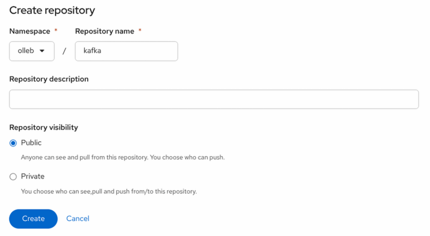
-
Click Create to finish.
Pushing and Tagging an Image
In this section, you will download a sample container image, tag it for your Quay registry, and push it to your repository.
-
Download the sample Kafka image from the upstream Quay repository:
podman pull quay.io/strimzi/kafka:latest-kafka-4.0.0-
Tag the downloaded image with your Quay registry hostname, organization name, repository, and a new tag:
podman tag quay.io/strimzi/kafka:latest-kafka-4.0.0 ${QUAY_HOSTNAME}/olleb/kafka:4.0.0-
Log in to your Quay registry using your credentials:
podman login ${QUAY_HOSTNAME}-
Push the tagged image to your Quay repository:
podman push ${QUAY_HOSTNAME}/olleb/kafka:4.0.0-
In the Quay web console, navigate to Repositories > olleb/kafka and verify that the
4.0.0tag appears in the Tags tab.
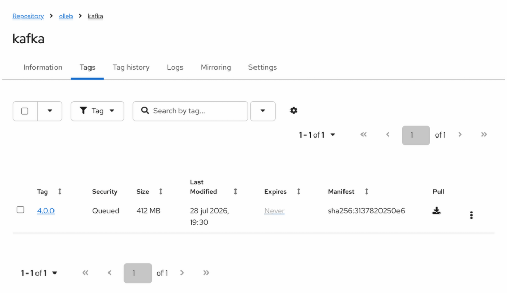
Inspecting Image Layers
Container images are composed of multiple read-only layers. Red Hat Quay provides full visibility into the image layers, software packages, and security vulnerability reports.
-
Inside the
olleb/kafkarepository, select the Tags tab. -
Click directly on the
4.0.0tag name to open the detailed view of the image manifest.
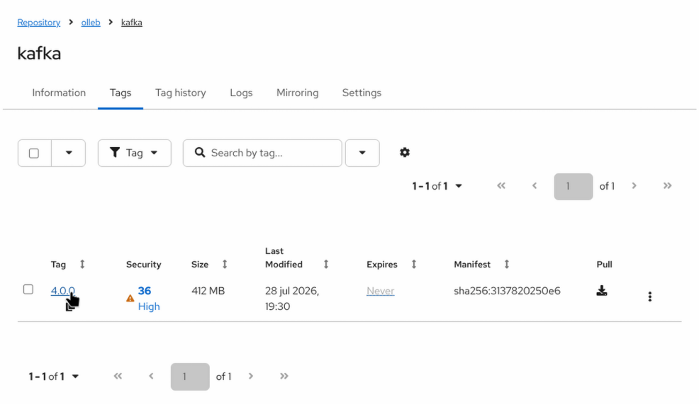
-
In the top menu of the tag view, explore the available sections:
-
Details: Displays image metadata including tag name, digest, size, creation date, vulnerability summary, labels, and copyable pull commands.
-
Layers: Breakdown of individual filesystem layers, build commands, and sizes.
-
Security Report: Vulnerability assessment scan results for the image layers.
-
Packages: Complete inventory of software packages and dependencies detected inside the image.
-

-
Click on the Layers tab to inspect the step-by-step construction of the container image.
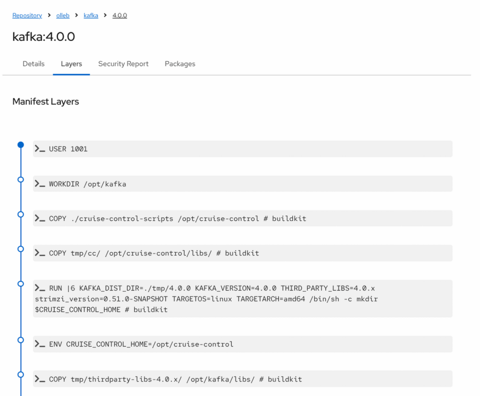
Pulling an Image
Because the olleb/kafka repository was created with Public visibility, any user can pull images from it without requiring authentication.
-
Navigate to Repositories > olleb/kafka and select the Tags tab.
-
Locate the
4.0.0tag and hover over the Pull (download arrow) icon on the right side of the row.
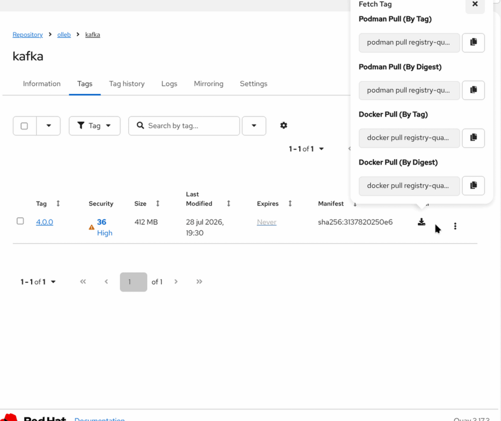
-
From the flyout menu that appears:
-
Locate the Podman Pull (by tag) option.
-
Click the copy icon next to the command to copy it to your clipboard.
-
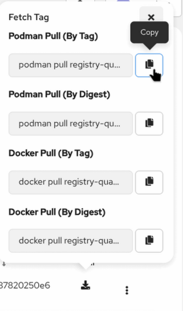
-
Open your terminal and run the copied command:
podman pull ${QUAY_HOSTNAME}/olleb/kafka:4.0.0-
Confirm that the image download completes successfully without requiring a login prompt.
Rolling Back an Image
Red Hat Quay maintains a detailed history of tag modifications, allowing you to easily review changes and revert a tag to a previous manifest digest if an issue occurs.
-
Create a new public repository named
rollbackunder theolleborganization. -
Create a minimal base image, tag it as
latest, and push it to Quay:
echo "FROM scratch" > Containerfile.rbk
podman build . -t rollback:1.0 -f Containerfile.rbk
podman tag localhost/rollback:1.0 ${QUAY_HOSTNAME}/olleb/rollback:latest
podman push ${QUAY_HOSTNAME}/olleb/rollback:latest-
In the Quay UI, navigate to Repositories > olleb/rollback > Tags to confirm the initial image push, noting its manifest digest and layer structure.
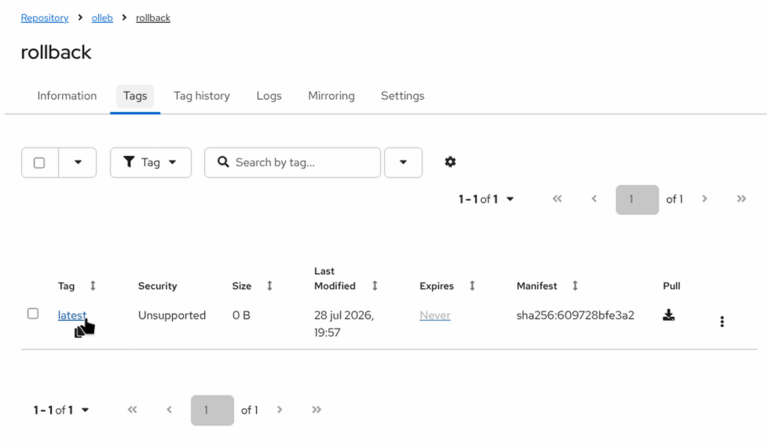
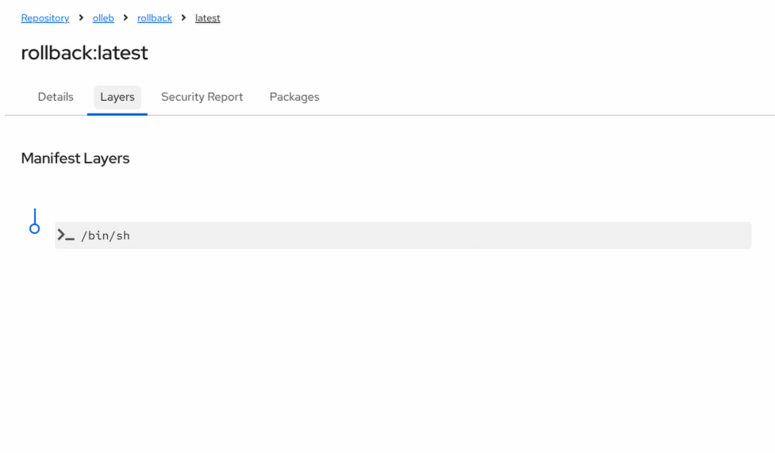
-
Modify the
Containerfile.rbkby adding a new layer, rebuild the image, and push it using the samelatesttag to overwrite the remote reference:
echo "LABEL org.opencontainers.image.authors=angel@olleb.com" >> Containerfile.rbk
podman build . -t rollback:2.0 -f Containerfile.rbk
podman tag localhost/rollback:2.0 ${QUAY_HOSTNAME}/olleb/rollback:latest
podman push ${QUAY_HOSTNAME}/olleb/rollback:latest-
In the Quay UI, refresh the Tags view and verify that the manifest digest and layer count for the
latesttag have changed.
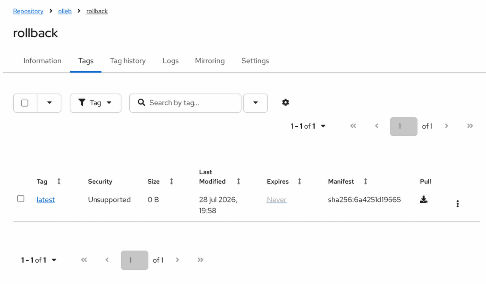
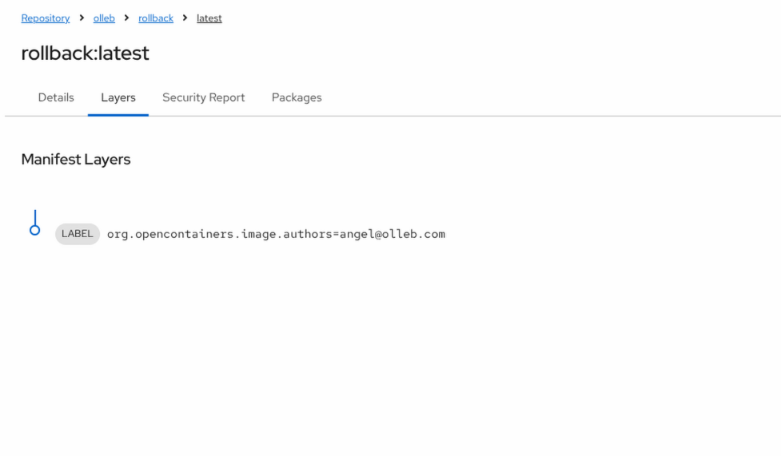
-
To revert to the original version, select the Tag History tab in the repository menu.
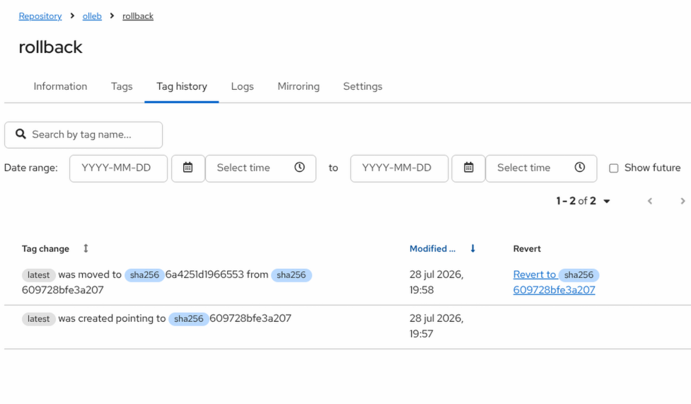
-
Locate the previous manifest entry for the
latesttag and click Revert to….
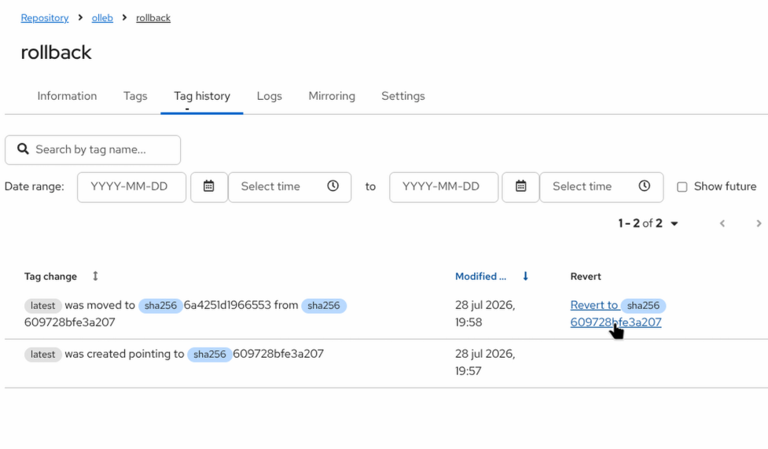
-
Click Restore Tag in the confirmation dialog to point the
latesttag back to the original manifest digest.
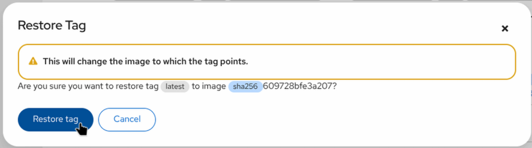
-
Return to the Tags view to verify that the
latesttag now points back to the original manifest digest and layer state.
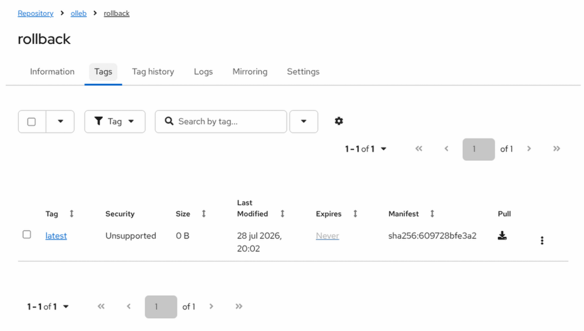
Image Expiration
Red Hat Quay allows you to configure expiration dates for image tags using container labels or via the web console. When a tag expires, it is automatically removed from the repository.
-
Create a new public repository named
expirationunder theolleborganization. -
Build, tag, and push a base
1.0image to theolleb/expirationrepository:
echo "FROM scratch" > Containerfile.exp
podman build . -t exp:1.0 -f Containerfile.exp
podman tag localhost/exp:1.0 ${QUAY_HOSTNAME}/olleb/expiration:1.0
podman push ${QUAY_HOSTNAME}/olleb/expiration:1.0-
Update
Containerfile.expto include thequay.expires-afterlabel set to5m(5 minutes). Rebuild, tag as both2.0andlatest, and push both tags to Quay:
echo "LABEL org.opencontainers.image.authors=angel@olleb.com" >> Containerfile.exp
echo "LABEL quay.expires-after=5m" >> Containerfile.exp
podman build . -t exp:2.0 -f Containerfile.exp
podman tag localhost/exp:2.0 ${QUAY_HOSTNAME}/olleb/expiration:2.0
podman push ${QUAY_HOSTNAME}/olleb/expiration:2.0
podman tag localhost/exp:2.0 ${QUAY_HOSTNAME}/olleb/expiration:latest
podman push ${QUAY_HOSTNAME}/olleb/expiration:latest-
In the Quay UI, navigate to Repositories > olleb/expiration > Tags. Observe that the
2.0andlatesttags display an indicator showing they are scheduled to expire soon.
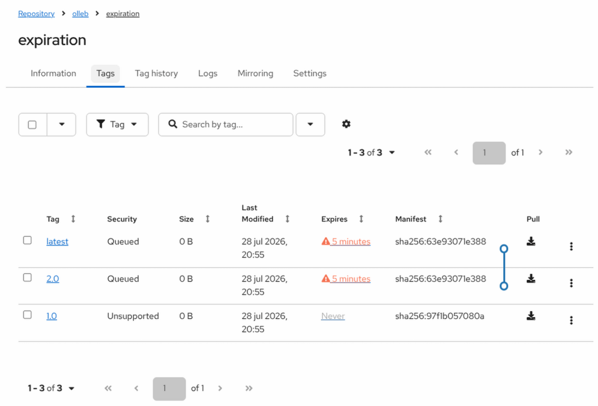
-
After 5 minutes, refresh the page to confirm that both tags have been automatically removed. Check the Tag History tab to verify the automatic deletion event.
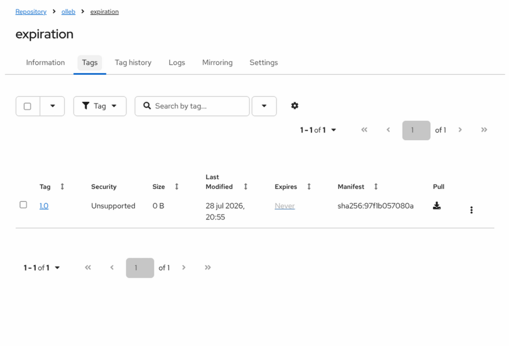
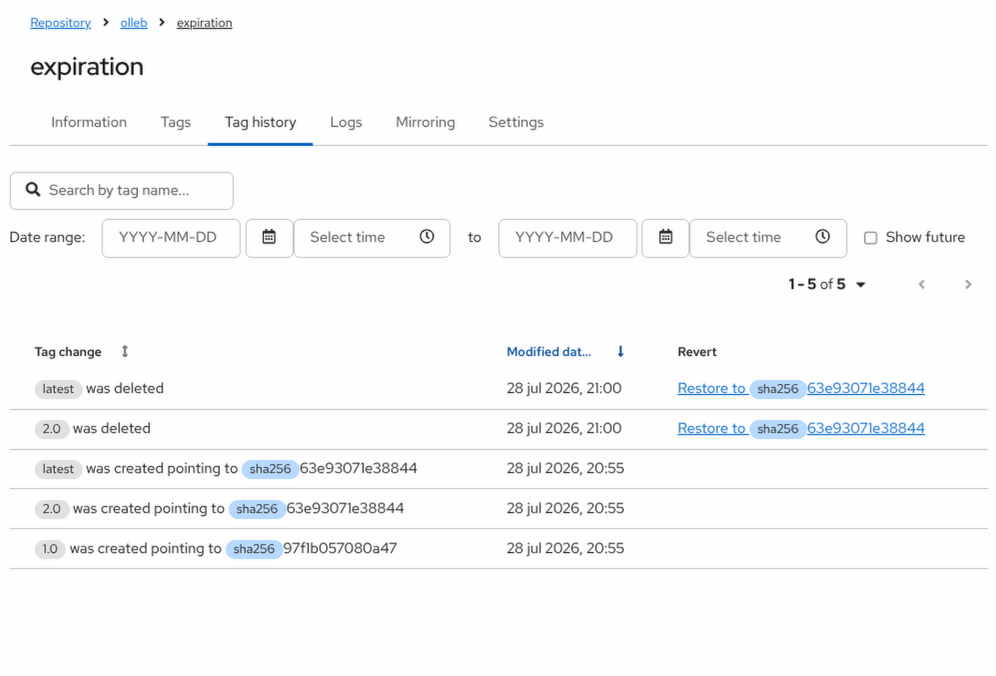
-
To set an expiration date manually from the web UI, select the checkbox for the
1.0tag, click the Actions menu, and select Set Expiration. Set the desired expiration date and click Change Expiration.
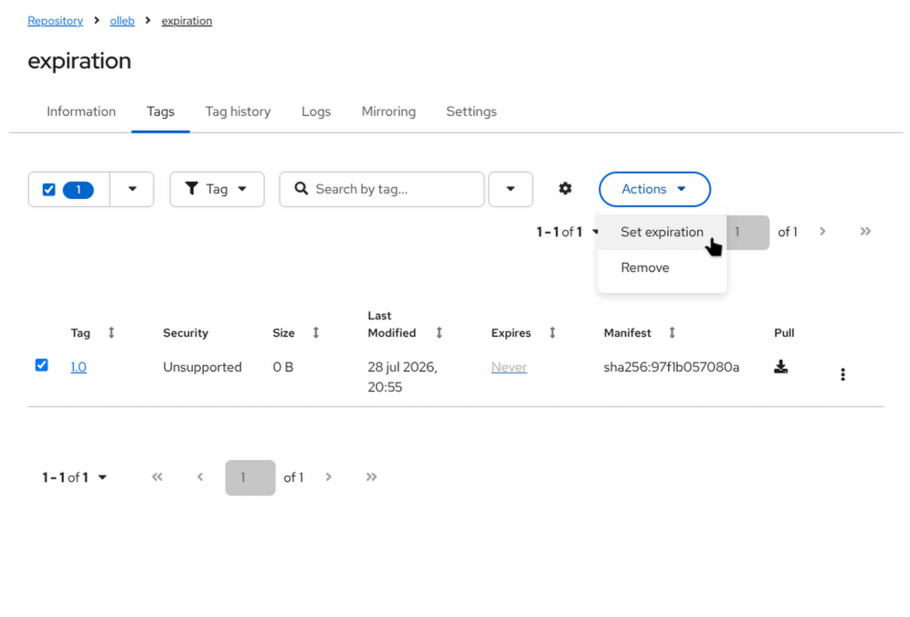
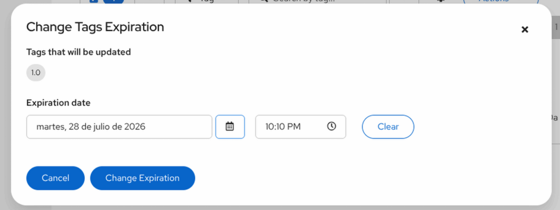
When a tag is close to expiring, Quay displays a warning status next to the tag:
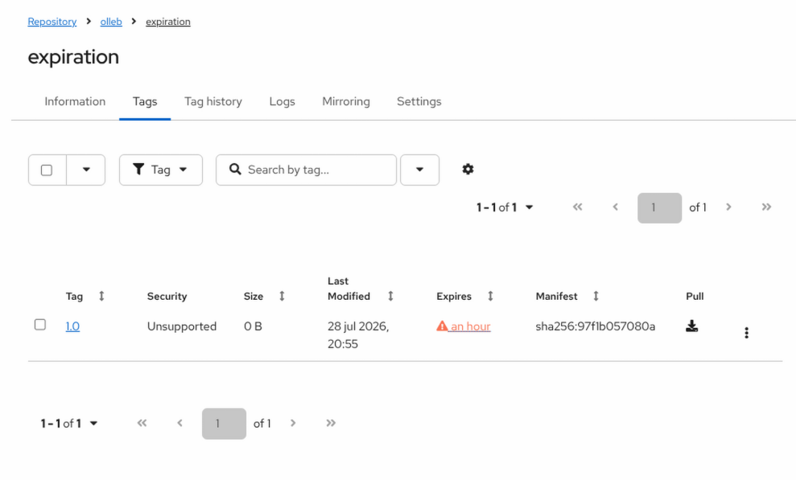
Time Machine and Garbage Collection
When a tag expires or is deleted, its underlying image manifest and layers are not immediately purged from disk. Quay uses a retention mechanism called Time Machine:
-
Images whose tags have been deleted remain recoverable during the Time Machine retention window (by default, 14 days / 2 weeks).
-
Once the Time Machine period passes, Quay’s garbage collection worker permanently deletes the unreferenced manifests and layers.
To inspect the current Time Machine settings for your organization, navigate to Organizations > olleb > Settings (or Settings within your user account for user-scoped repositories).
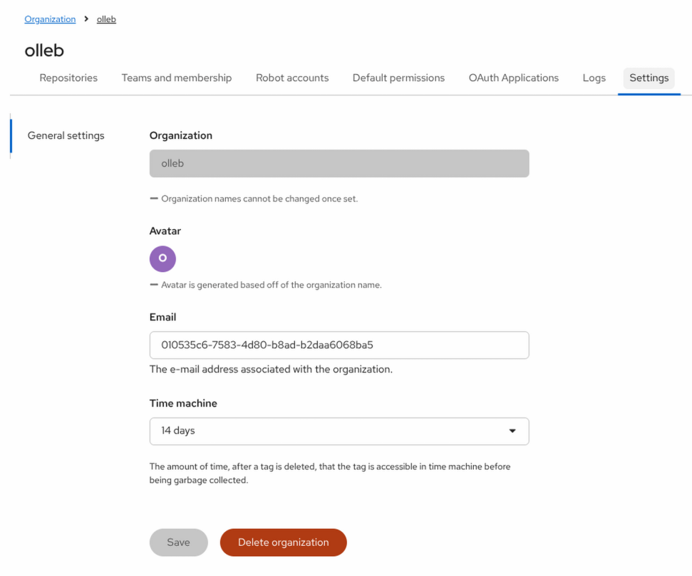
The Time Machine options can be customized in Quay’s configuration using the TAG_EXPIRATION_OPTIONS array property alongside DEFAULT_TAG_EXPIRATION:
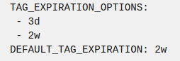
Configuring these options updates the available retention periods in the UI:
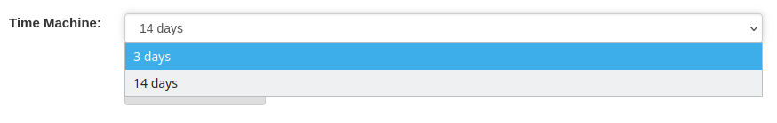
Deleting or Archiving a Repository
When a repository is no longer needed, Red Hat Quay allows you to change its operational state, modify its visibility, or permanently delete it.
-
Navigate to Repositories > olleb/kafka and select Settings from the navigation menu.
-
Review the repository management options:
-
User and Robot Permissions: Manage access levels for individual users and robot accounts.
-
Events and Notifications: Configure webhooks or alerts triggered by repository events.
-
Repository State: Change the operational status between Normal, Read Only, or Mirroring.
-
Repository Visibility: Switch the repository accessibility between Public and Private.
-
Delete Repository: Permanently remove the repository and all its associated tag references.
-
-
To permanently remove the repository:
-
Click the Delete Repository section.
-
Click the Delete Repository button.
-
Enter the repository name
olleb/kafkain the confirmation prompt. -
Click Delete to finish.
-
| Deleting a repository removes its tags immediately. The underlying image layers and manifests are permanently cleaned up by Quay’s garbage collection worker after the Time Machine retention period expires. |